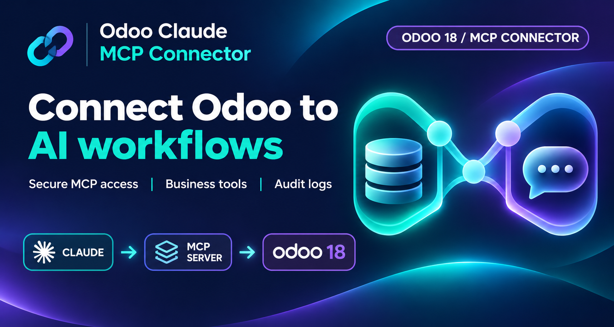

Odoo Claude MCP Connector
Connect Claude and MCP-compatible AI clients to your Odoo 18 database through permission-aware, structured business tools.
Secure MCP Server
Self-hosted MCP endpoint, user-mapped API keys and OAuth support. Respect Odoo user permissions and company access.
Explore Business Data
Discover permitted models and fields, query records, use aggregates and retrieve direct record links. No free-form SQL tool.
Controlled Actions
Optional draft creation and curated business actions, controlled per API key and model. Write capabilities are disabled by default.
How it works
Configure an API key and a dedicated Odoo user, connect your MCP-compatible client to your Odoo server endpoint, and enable only the required business tools and queryable models.

Core capabilities
- Model discovery, field inspection, structured records and aggregate queries.
- Sales, CRM, accounting, purchasing and inventory tools when the respective Odoo apps are installed.
- Access rules tied to the Odoo user, companies, API key and configured models.
- Optional controlled creation of draft records and selected workflow actions.
- Call auditing, log retention settings and cleanup controls.
Requirements and setup
Compatible Odoo version: 18.0. Dependencies: Odoo Base and Web only. Additional Odoo business apps are optional and unlock their respective tools.
An MCP-compatible AI client, access to your own Odoo instance and properly scoped credentials are required. AI subscriptions and external client services are not included.
Security recommendations
Use a dedicated least-privilege Odoo user, give each API key only the tools and data it needs, and review audit logs. Enable write actions only for trusted users and models.
Odoo 18 • Claude / MCP integration • Secure business tools